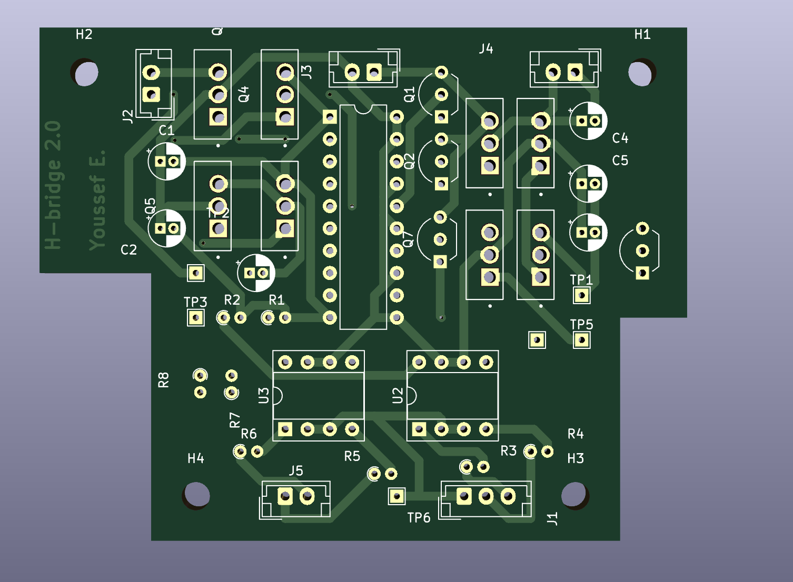
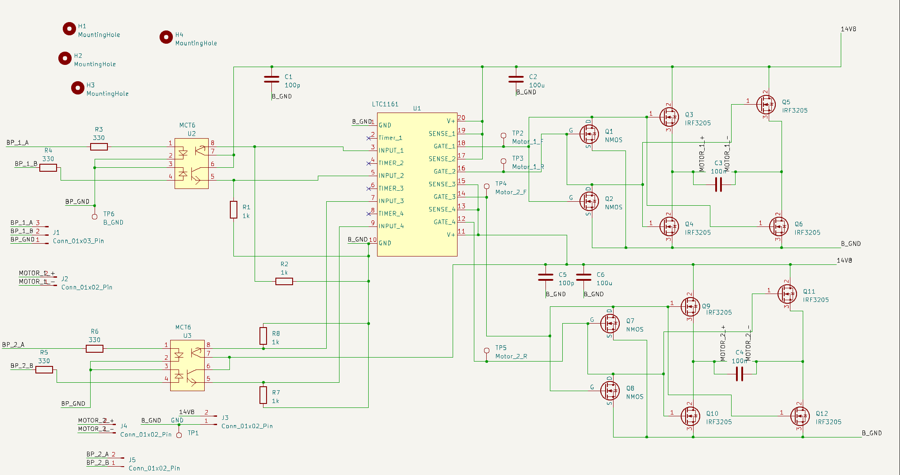
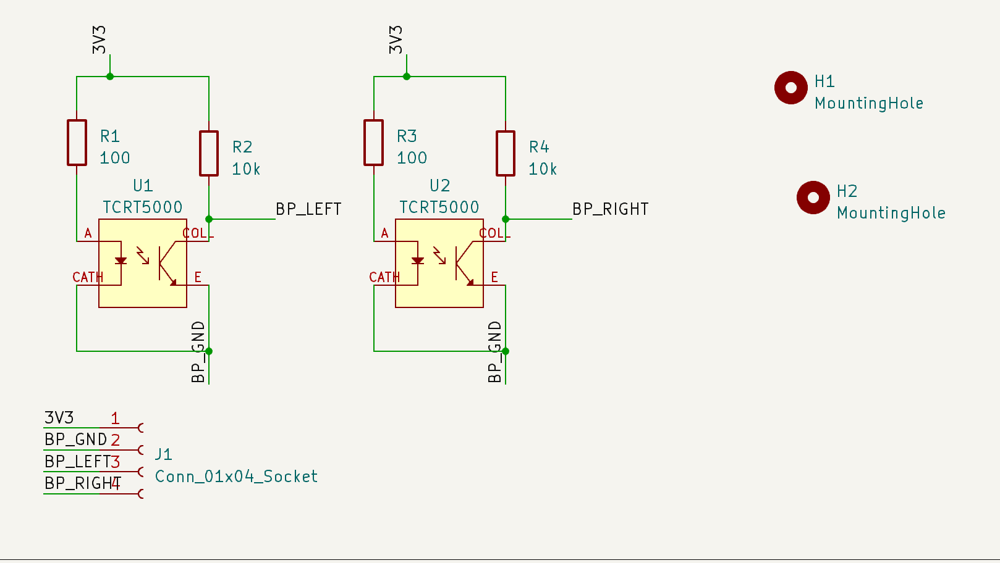
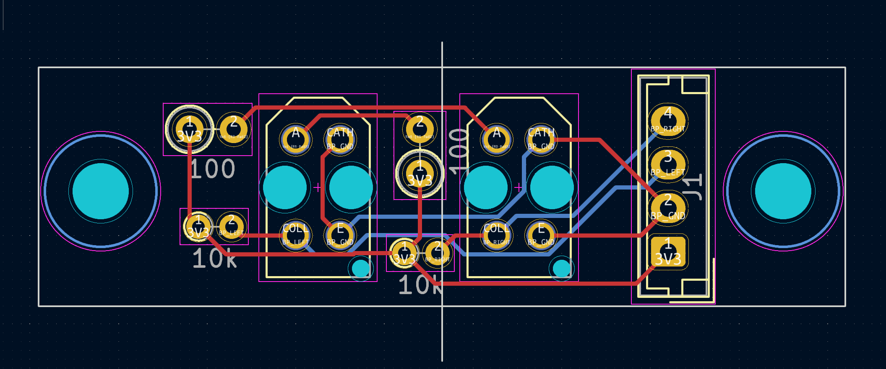
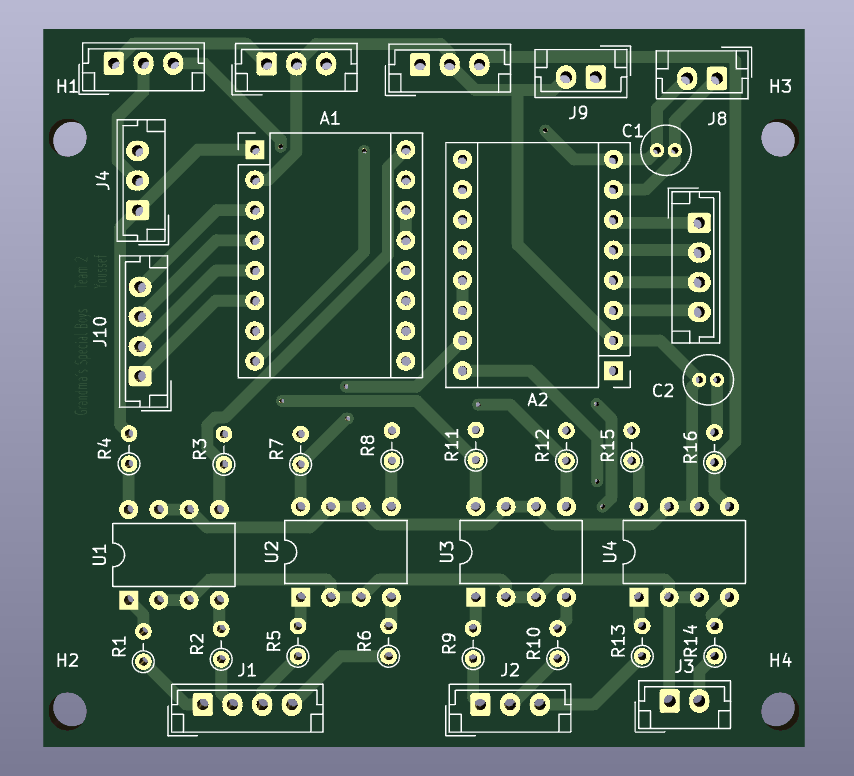
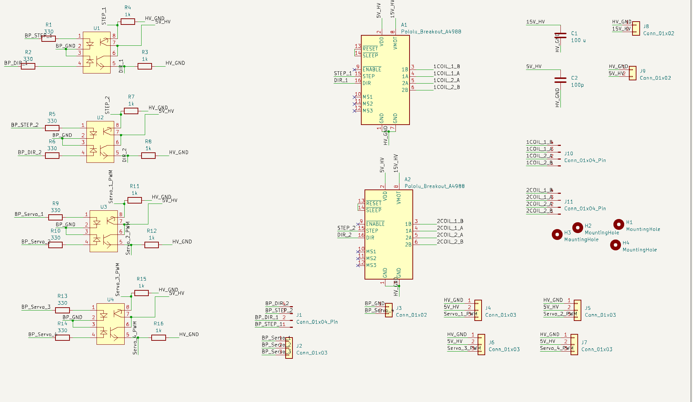

Electrical: Robot Summer
Competition
Designed PCBs & Firmware for two robots during a robot competition culminating in a win for my team over 14 other teams.
Our goal was to create two autonomous robots capable of working together in real-time to complete complex tasks such as placing ingredients, cooking patties, and assembling a burger, mimicking the teamwork found in Overcooked. After several design iterations and overcoming various technical challenges, including significant issues with stepper motors, we emerged as the victors in the competition after a tough battle in the finals.
Role
My primary responsibilities in the project included the design and development of all the electrical circuits and Printed Circuit Boards (PCBs) necessary for the robots' functionality. This encompassed:
H-Bridge circuits for controlling the motors
I/O boards to manage input and output signals
Power boards with integrated current sensing to ensure stable operation
Actuator boards to drive the robot's mechanical components
Sensor boards for real-time feedback and decision-making
Wireless communication between both robots using ESP32-Now and C++
Sample Circuits


H-Bridge
H-bridge PCB that is controlled using ESP-32. I included opto-isolators to keep HV and LV grounds seperated. I included plenty of de-coupling capacitors as well.


Sensor Board
The sensor board was required to follow tape. As such, we used a reflectance sensor to detect black tape. The spacing of the sensor had to be precise so that both detectors would have high values when on black tape.


Distribution Board
I created footprints for the stepper motor driver that ran our carousel. This was also used to drive our servos. We had to experiment with the current sense limits by following the datasheet. I also used opto-isolators here to keep HV and LV grounds seperate.
Challenges and Achievements
This year’s competition was the toughest edition of the annual second-year Engineering Physics competition, with numerous technical challenges. The stepper motor issues we encountered tested our problem-solving abilities, but we managed to find solutions that allowed our robots to perform consistently in the finals. Despite the difficulties, the experience was highly rewarding, and I’m incredibly proud of our team’s dedication and relentless effort.
Media Coverage
Check out the following links:
GlobalNews video (see 1:40): GlobalNews
GlobalTimes: GlobalTimes
UBC Engineering: UBC Engineering
CityNews: CityNews